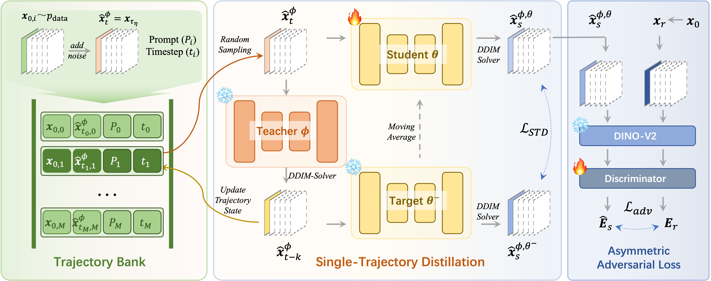

Visualization of Results. Stylization examples of our method at the number of function evaluations (NFEs) 8 and 4.
Abstract
Diffusion-based stylization methods typically denoise from a specific partial noise state for image-to-image and video-to-video tasks. This multi-step diffusion process is computationally expensive and hinders real-world application. A promising solution to speed up the process is to obtain few-step consistency models through trajectory distillation. However, current consistency models only force the initial-step alignment between the probability flow ODE (PF-ODE) trajectories of the student and the imperfect teacher models. This training strategy can not ensure the consistency of whole trajectories. To address this issue, we propose to distill a single PF-ODE trajectory starting from a specific partial noise state. We introduce a trajectory bank to store the teacher model's trajectory states, mitigating the time cost during training. Besides, we use an asymmetric adversarial loss to enhance the style and quality of the generated images. Extensive experiments on image and video stylization demonstrate that our method surpasses existing acceleration models in terms of style similarity and aesthetic evaluations.

Image Comparision
Comparison results in NFEs=8 and CFG=6.
More comparison results in NFEs=8 and CFG=6.
Comparison results in NFEs=4 and CFG=6.
Comparison results in NFEs=8 and CFG=Reconmended CFGs.